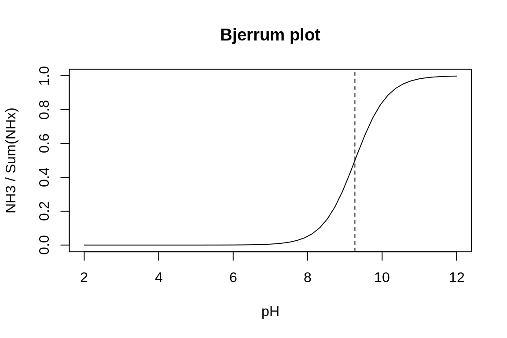

Tutorial
You are advised to watch the following video first. If you want, you can skip the first part (0:00-5:20) and jump straight to the more challenging second part (5:20-end).
Video timeline
- 0:00 Elementary chemical reactions
- 5:20 Reversible reactions
- 8:07 Chemical equilibrium
- 9:30 Modelling processes occurring at vastly different time-scales
- 17:24 Application to ammonia dissociation and pH modelling
You can also read the following section(s) of the textbook:
- Chapter 8. Multiple time scales and Equilibrium Processes
(You can download each chapter of the textbook via the e-book University library for free!)
Reversible reaction: rates
Assume that the following reversible chemical reaction is the only process affecting ammonia (\(NH_3\)), ammonium (\(NH_4^+\)) and protons (\(H^+\)).
\[ NH_4^+(aq) \leftrightarrow NH_3(aq) + H^+ \]
- The rate constant for the forward reaction is \(k_f\).
- The rate constant for the backward reaction is \(k_b\).
Reversible reaction: units
Consider the following reversible chemical reaction:
\[ NH_4^+(aq) \leftrightarrow NH_3(aq) + H^+ \]
- The rate constant for the forward reaction is \(k_f\).
- The rate constant for the backward reaction is \(k_b\).
Equilibrium constant
Consider the following reversible chemical reaction:
\[ NH_4^+(aq) \leftrightarrow NH_3(aq) + H^+ \]
where the forward and backward rate constants are \(k_f\) and \(k_b\), respectively.
Assume that
- an equilibrium has been reached
- the equilibrium constant for this reaction is denoted as \(K_{N}\), with units of \(mol~m^{-3}\)
- the concentration of total ammonia is defined as \([\sum NH_x] = [NH_3] + [NH_4^+]\)
- the equilibrium concentration of ammonia and ammonium is denoted as \([NH_3]^*\) and \([NH_4^+]^*\), respectively.
Lump sums
Consider that the following reversible chemical reaction is the only reaction in the system:
\[ NH_4^+(aq) \leftrightarrow NH_3(aq) + H^+ \]
Equilibrium formulation
Consider the following reversible chemical reaction:
\[ NH_4^+(aq) \leftrightarrow NH_3(aq) + H^+ \]
where the forward and backward rate constants are \(k_f\) and \(k_b\), respectively.
Assume that
- an equilibrium has been reached
- the equilibrium constant for this reaction is denoted as \(K_{N}\), with units of \(mol~m^{-3}\)
- the concentration of total ammonia is defined as \([\sum NH_x] = [NH_3] + [NH_4^+]\)
- the equilibrium concentration of ammonia and ammonium is denoted as \([NH_3]^*\) and \([NH_4^+]^*\), respectively.
Bjerrum plot
Bjerrum plots show how the equilibrium concentration (or fraction) of the various ionic forms of a lump-sum (aka equilibrium speciation) changes as a function of pH. For ammonia, we have \(K_N = 5.380823\times 10^{-10}~mol~kg^{-1}\). Thus, we obtain
KN <- 5.380823e-10
pH <- seq(from=2, to=12, length.out=50)
H <- 10^{-pH}
NH3 <- KN/(KN+H)
plot(pH, NH3, col=1, type = "l", main = "Bjerrum plot", ylab="NH3 / Sum(NHx)")
abline(v=-log10(KN), lty=2)
Complete the R code to add the fraction of ammonium to the Bjerrum plot.
plot(pH, NH3, type = "l", ylab = "fractions", main = "Bjerrum plot: NH4+ <-> NH3 + H+")
NH4 <- ### ADD THE EQUATION HERE
lines(pH, NH4, col=2)
abline(v=-log10(KN), lty=2)
legend("left", legend=c("NH3","NH4+","pKN"), col=c(1,2,1), lty=c(1,1,2))Two reactions: equilibrium
Consider the following two reversible chemical reactions:
\[ Reaction~1: \qquad H_2CO_3 \leftrightarrow HCO_3^- + H^+ \]
\[ Reaction~2: \qquad HCO_3^- \leftrightarrow CO_3^{2-} + H^+ \]
Equilibrium constants for the reactions 1 and 2 are \(K_1\) and \(K_2\), respectively. Assume that the concentration of the total dissolved inorganic carbon (\([DIC] = [H_2CO_3] + [HCO_3^-] + [CO_3^{2-}]\)) is constant and equal to [DIC].
Two reactions: Bjerrum plot
Similar to the total ammonia, we can display the Bjerrum plots for the equilibrium speciation of DIC as a function of pH.
Assuming that the first and second dissociation constants for the carbonic acid are, respectively, \(K_2 = 10^{-6}~mol~kg^{-1}\) and \(K_2 = 10^{-9.5}~mol~kg^{-1}\) (i.e., \(pK_1 = 6\) and \(pK_2 = 9.5\)), we can calculate the equilibrium concentrations of the carbonic acid, bicarbonate and carbonate using the following R-code. Study the code and then run it to see the result.
pK1 <- 6
pK2 <- 9.5
pH <- seq(from=2, to=12, length.out=50)
H <- 10^{-pH}
K1 <- 10^{-pK1}
K2 <- 10^{-pK2}
H2CO3 <- H*H / (H*H+K1*H+K1*K2)
HCO3 <- K1*H / (H*H+K1*H+K1*K2)
CO3 <- K1*K2/ (H*H+K1*H+K1*K2)
plot(pH, H2CO3, col=1, type = "l", main = "Bjerrum plot - DIC", ylab="fraction")
lines(pH, HCO3, col=2)
lines(pH, CO3, col=3)
abline(v=pK1, lty=2)
abline(v=pK2, lty=3)
legend("left", legend=c("H2CO3","HCO3","CO3","pK1","pK2"), col=c(1,2,3,1,1), lty=c(1,1,1,2,3))The graph above shows that in an equilibrium at \(pH=8\), which is approximately the pH of seawater, bicarbonate is the dominant DIC species. You may be familiar with this idea from your aquatic chemistry or marine chemistry class.
Experiment with the above R-code to explore how the DIC speciation shifts with changing values of \(K_1\) and \(K_2\). These parameters change, for instance, with changing temperature or salinity.
Two reactions: lump-sums
Consider the following two reversible chemical reactions:
\[ Reaction~1: \qquad H_2CO_3 \leftrightarrow HCO_3^- + H^+ \]
\[ Reaction~2: \qquad HCO_3^- \leftrightarrow CO_3^{2-} + H^+ \]
To make use of the local equilibrium, we need to find combinations of species that are not affected by the above reactions.
Lump sums revisited
Consider the following two reversible chemical reactions:
\[ Reaction~1: \qquad H_2CO_3 \leftrightarrow HCO_3^- + H^+ \\ Reaction~2: \qquad HCO_3^- \leftrightarrow CO_3^{2-} + H^+ \]
The most straight-forward (but rather elaborate) way to determine whether a given sum of species is suitable as a lump sum (i.e., it is not affected by the reversible reactions) is to expand its time-derivative. We will demonstrate it here.
We denote by \(R_{1f}\) and \(R_{1b}\) the forward and backward reaction rate of reaction 1 (in \(mol~m^{-3}~s^{-1}\)), and by \(R_{2f}\) and \(R_{2b}\) the forward and backward reaction rate of reaction 2 (in \(mol~m^{-3}~s^{-1}\)), respectively. Thus, we can write:
\[\frac{d[H_2CO_3]}{dt}=-R_{1f}+R_{1b}\] \[\frac{d[HCO_3^-]}{dt}=R_{1f} - R_{1b} - R_{2f} + R_{2b}\] \[\frac{d[H^+]}{dt}=R_{1f} - R_{1b} + R_{2f} - R_{2b}\] \[\frac{d[CO_3^{2-}]}{dt}=R_{2f} - R_{2b}\] If we define the lump sum carbonate alkalinity as \[[ALK_C] = [HCO_3^-] + 2\cdot [CO_3^{2-}] - [H^+],\] it is straight-forward to see, by direct substitution, that its time derivative is zero: \[\frac{d[ALK_C]}{dt} = \frac{d[HCO_3^-]}{dt} + 2\cdot \frac{d[CO_3^{2-}]}{dt} - \frac{d[H^+]}{dt} = 0.\]
Combined reversible and irreversible reactions
Consider the following chemical reactions:
\[ Reaction~1: \qquad H_2CO_3 \leftrightarrow HCO_3^- + H^+ \\ Reaction~2: \qquad HCO_3^- \leftrightarrow CO_3^{2-} + H^+\\ Reaction~3: \qquad NH_4^+ \leftrightarrow NH_3 + H^+\\ Reaction~4: \qquad HNO_3 \leftrightarrow NO_3^- + H^+\\ Reaction~5: \quad CH_2O(NH_3)_{NC} + O_2 \rightarrow H_2CO_3 + NC \cdot NH_3\\ Reaction~6: \quad NH_3 + 2O_2 \rightarrow NO_3^- + H^+ + H_2O \]
- Assume that reactions 1–4 are fast and reversible, whereas reactions 5–6 correspond to slow irreversible processes (mediated by microbes).
- Reaction 5, which corresponds to aerobic mineralization of organic matter, occurs at a rate \(R_{aero}\).
- Reaction 6, which corresponds to nitrification, occurs at a rate \(R_{nit}\).
Combined fast reversible and slow irreversible reactions: the full model
Consider the following reactions:
\[ Reaction~1: \qquad H_2CO_3 \leftrightarrow HCO_3^- + H^+ \\ Reaction~2: \qquad HCO_3^- \leftrightarrow CO_3^{2-} + H^+\\ Reaction~3: \qquad NH_4^+ \leftrightarrow NH_3 + H^+\\ Reaction~4: \qquad HNO_3 \leftrightarrow NO_3^- + H^+\\ Reaction~5: \quad CH_2O(NH_3)_{NC} + O_2 \rightarrow H_2CO_3 + NC \cdot NH_3\\ Reaction~6: \quad NH_3 + 2O_2 \rightarrow NO_3^- + H^+ + H_2O \]
- Assume that reactions 1–4 are fast and reversible, whereas reactions 5–6 correspond to slow irreversible processes (mediated by microbes).
- Reaction 5, which corresponds to aerobic mineralization of organic matter, occurs at a rate \(R_{aero}\).
- Reaction 6, which corresponds to nitrification, occurs at a rate \(R_{nit}\).
Use the following lump sums (TA stands for total alkalinity):
\[ [DIC] = [H_2CO_3] + [HCO_3^-] + [CO3^{2-}]\\ [NH_x] = [NH_4^+] + [NH_3]\\ [H_xNO_3] = [HNO_3] + [NO_3^-]\\ [TA] = [HCO_3^−] + 2 [CO_3^{2−}] + [NH_3] + [NO_3^-] − [H^+] \]
More exercises
To learn more about modelling of chemical reactions — and specifically of chemical reactions under the local equilibrium condition — try to solve additional exercises available in the R-package RTM. To display these exercises, type one of the following commands in the R-console:
require(RTM)
RTMexercise("equilibriumNH3")
RTMexercise("equilibriumHCO3")
RTMexercise("equilibriumOMD")Finally
References
R Core Team (2020). R: A language and environment for statistical computing. R Foundation for Statistical Computing, Vienna, Austria. URL https://www.R-project.org/.
Karline Soetaert, Peter M.J. Herman (2009). A Practical Guide to Ecological Modelling. Springer Netherlands. DOI: 10.1007/978-1-4020-8624-3.